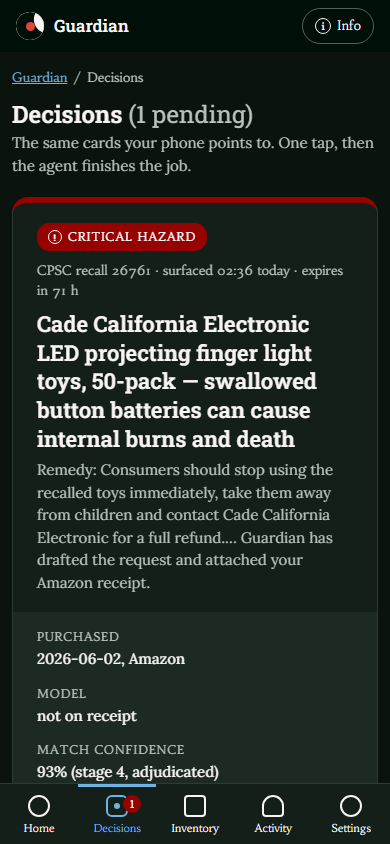
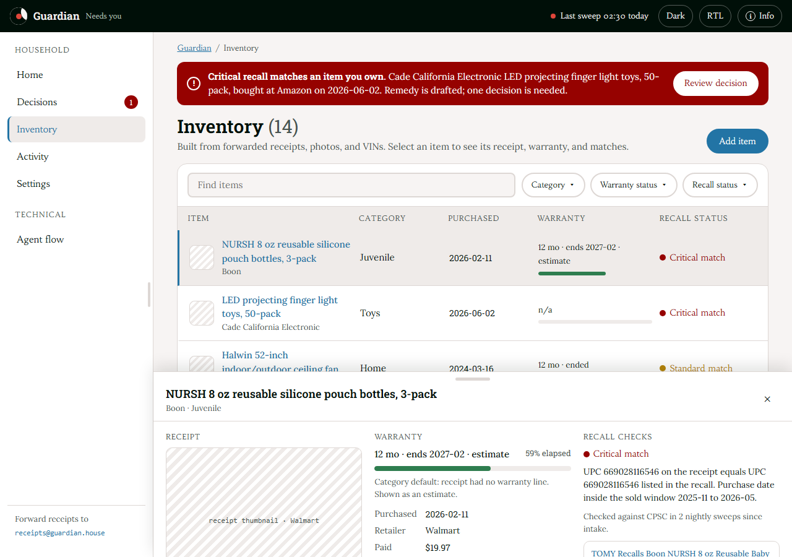
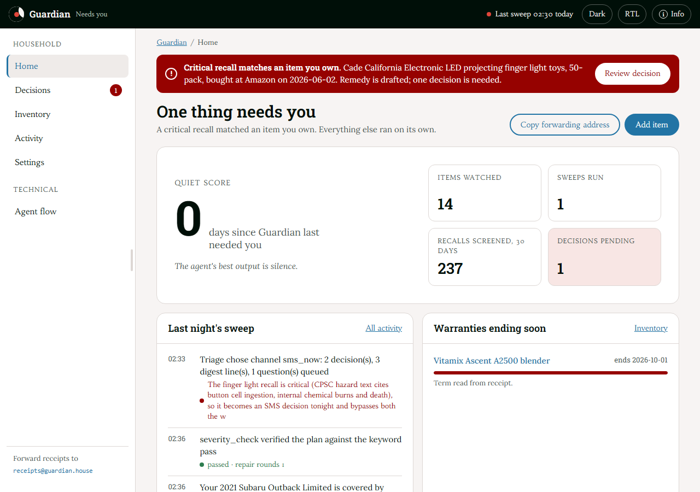
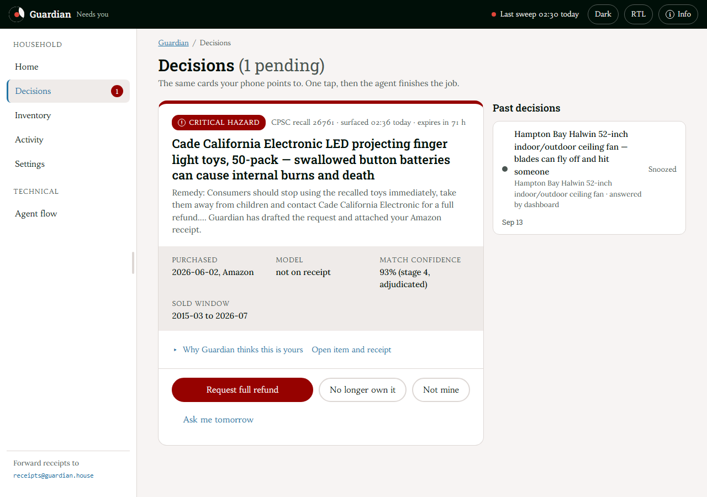
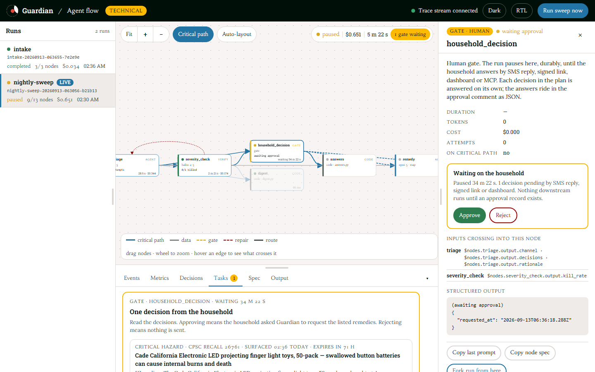
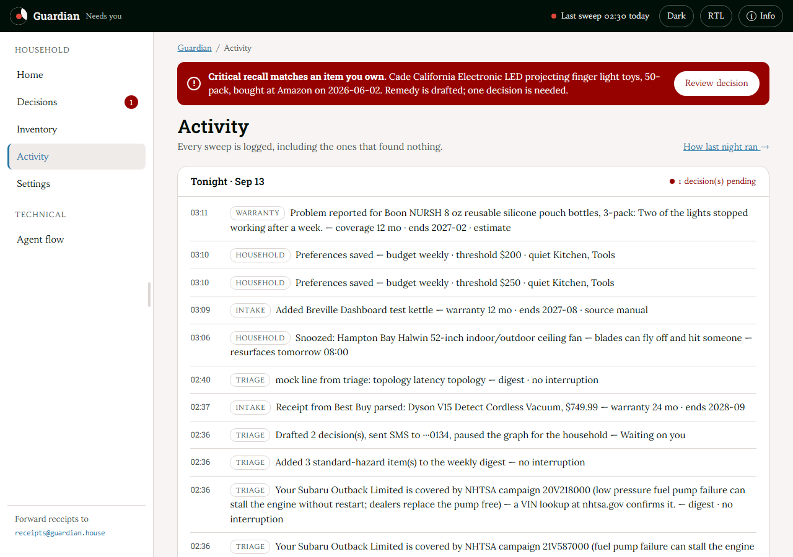

A background agent that watches government recall feeds for the things your household actually owns.
The agent's best output is silence.
Agents for Humans · Everyday Agents · Strands Agents SDK
github.com/KrishGup/Recall-and-Warranty-Guardian
The problem
Recalls exist because products injure people. Remedies are free: refunds, repair kits, replacement parts. Most go unclaimed, because the notice reaches everyone and the receipt that proves you own the product sits in an email nobody opens again.
594
CPSC recalls published in one 400-day window
1,200
openFDA enforcement reports in the same window
3
NHTSA campaigns open against a single 2019 Subaru Outback
Who it's for
Not another app to keep open. One SMS with one decision, and only when something you own is actually affected.

What Guardian does
01
intake graph · code + agent
Forward a receipt or paste an order confirmation. Card numbers are stripped; brand, model, UPC, purchase date, retailer and warranty term are filed. Cars are added by VIN.
02
nightly sweep · code first
Every night a Strands graph pulls new recalls from CPSC, NHTSA and openFDA and matches them in code: exact keys, lexical similarity, sold window. Only ambiguous pairs reach a model.
03
agent · verifier · human gate
A triage agent applies severity rules and the household's notification budget; an adversarial verifier can send it back once. Critical hazards become one SMS. The graph pauses on a human gate for up to 72 hours.
04
agent · side effect, once
When the household answers, the graph resumes: a remedy agent drafts the request from the recall's own remedy and contact, sends it exactly once with the receipt attached, and schedules a 10-business-day follow-up.
Demo · 1 / 5
12 items seeded from real receipts and one VIN. Intake redacts card numbers, then extracts brand, model, UPC, date, retailer and warranty term.
UPC 669028116546 on the Walmart receipt equals the UPC in CPSC recall 26530; the purchase date sits inside the sold window.
Checked against CPSC in 2 nightly sweeps since intake.

Demo · 2 / 5
Quiet score: days since Guardian last needed you. Zero today, because one critical recall matched.
14 items watched · 1 sweep run · 237 recalls screened · 1 decision pending.
The sweep log: triage chose sms_now, and severity_check verified the plan against the keyword pass.

Demo · 3 / 5
CPSC recall 26761, surfaced 02:36 today, expires in 71 h.
Stage 4 match: the model was not on the receipt, so the matcher adjudicated it at 93%. The rationale is one click away.
Request full refund · No longer own it · Not mine · Ask me tomorrow. One tap, then the agent finishes the job.

Demo · 4 / 5
Deterministic code in grey, agents in blue, the verifier in green, the human gate in amber.
Paused 34 m at household_decision. The checkpoint is on disk; nothing downstream runs without an approval record.
Approve resumes the same graph. Completed nodes replay without new model calls.

Demo · 5 / 5
Three NHTSA campaigns on the Outback went to the weekly digest. No interruption.
A new receipt, a snooze and a saved preference sit alongside triage.
Including the sweeps that found nothing.

How it works
severity_check routes to household_decision when the plan's channel is sms_now, otherwise to digest. Deterministic pipes, judgment in agents; every agent output is a validated structured object. A quiet night skips every agent node: zero model calls, $0.
On Strands Agents
GraphBuilder
Every node is a Strands MultiAgentBase executor. Edges are derived from data references such as $nodes.matcher.outputs, never declared by hand.
AND-joins
Strands readiness is OR. gren adds an edge condition so a node runs only once all of its dependencies have completed.
Gates are interrupts
A BeforeNodeCallEvent hook raises event.interrupt. The run pauses, the checkpoint sits on disk, the process may exit. Resume replays completed nodes without new model calls.
Verifier with kill authority
severity_check returns {verdict, reasons, confidence}. A kill resets triage with the reasons as feedback through a conditional back-edge, at most one round.
Map fan-out
matcher, warranty and remedy map over lists with structured_output_model. Retries, fallback model, timeouts, quorum and the spend cap are enforced by the engine.
Side effects, once
followup declares side_effect and requires_gate. The frozen constraint gate_before_side_effect makes it unreachable without approval; it runs at most once per run.
Not yet built: AgentCore Runtime deployment and SES/SNS delivery. The Bedrock provider and the AgentCore attachment points exist; see ARCHITECTURE.md §5.
A real first sweep · 13 Sep 2026 · live feeds
594
CPSC recalls pulled, plus 3 NHTSA campaigns
1,200
openFDA food enforcement reports pulled
7,143
item–recall pairs checked in code
5 + 3
exact matches, plus ambiguous pairs adjudicated by the model
235 s
from start to the human gate
$0.41
model spend for the night
Approving from the dashboard drafted the refund request to the recall's real contact address and scheduled the follow-up. 32 pytest tests run the graph end to end on the mock provider: pause at the gate, approve, decline, quiet night, verifier kill and repair.
The agent's best output is silence. The product's headline metric is how rarely it has to talk to you.
github.com/KrishGup/Recall-and-Warranty-Guardian
Apache-2.0 · Strands Agents SDK · Everyday Agents track